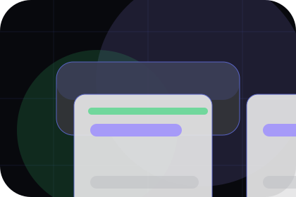
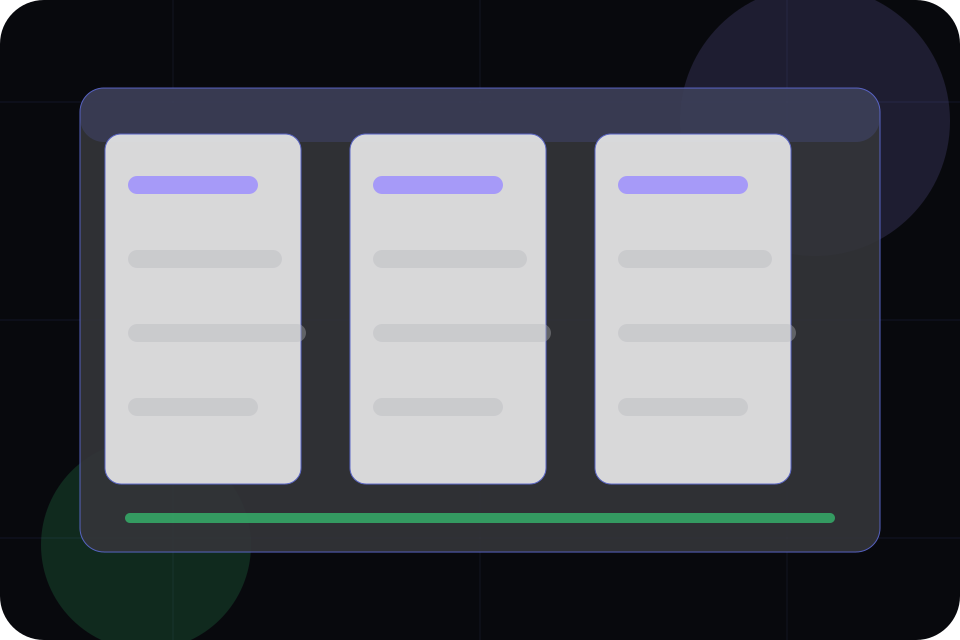
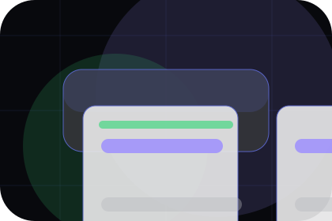
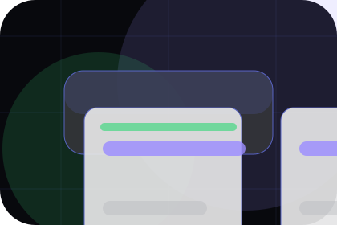
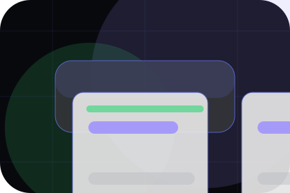
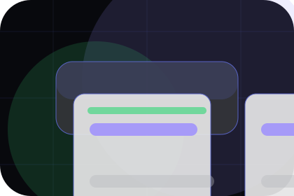
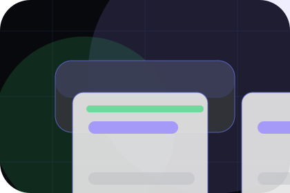
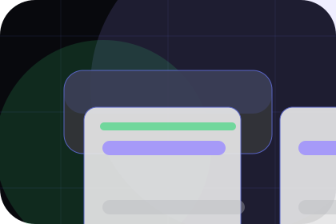
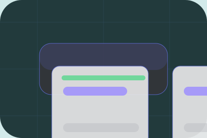

SpecOrbit guides spec
A useful entry point for visitors who need more context before they schedule a demo.
Open resourceResources / 01
Resources opens as a clear software decision hub: what Orbit offers, who it helps, why it matters, and which route to take first.
The first screen combines positioning, proof, primary action, and fast internal navigation, so people can act immediately or compare the rest of the resources route with context.
App interface hero
Select the closest route and Orbit keeps the next step, proof, and follow-up expectation aligned with speed, clarity, and product confidence.

Resources / 02
Guides gives researching visitors a practical route into guides, checklists, and comparison material without leaving the site structure.
Each resource behaves like a useful internal link, giving cold and warm visitors a way to learn, compare, and return to the action path.
View ResourcesA useful entry point for visitors who need more context before they schedule a demo.
A scannable comparison aid that makes research usable before the next decision.
A route back to support, services, or contact when the visitor is ready to act.

SpecA useful entry point for visitors who need more context before they schedule a demo.
Open resource
ReportA scannable comparison aid that makes research usable before the next decision.
Open resource
PlaybookA route back to support, services, or contact when the visitor is ready to act.
Open resourceResources / 03
Templates gives researching visitors a practical route into guides, checklists, and comparison material without leaving the site structure.
Each resource behaves like a useful internal link, giving cold and warm visitors a way to learn, compare, and return to the action path.
Explore ResourcesA useful entry point for visitors who need more context before they schedule a demo.
A scannable comparison aid that makes research usable before the next decision.

A route back to support, services, or contact when the visitor is ready to act.
A useful entry point for visitors who need more context before they schedule a demo.
Open resourceA scannable comparison aid that makes research usable before the next decision.
Open resourceA route back to support, services, or contact when the visitor is ready to act.
Open resourceResources / 04
Webinars gives researching visitors a practical route into guides, checklists, and comparison material without leaving the site structure.
Each resource behaves like a useful internal link, giving cold and warm visitors a way to learn, compare, and return to the action path.
Explore ResourcesA useful entry point for visitors who need more context before they schedule a demo.
A scannable comparison aid that makes research usable before the next decision.

A route back to support, services, or contact when the visitor is ready to act.
Resources / 05
Downloads gives researching visitors a practical route into guides, checklists, and comparison material without leaving the site structure.
Each resource behaves like a useful internal link, giving cold and warm visitors a way to learn, compare, and return to the action path.
View ResourcesA useful entry point for visitors who need more context before they schedule a demo.
A scannable comparison aid that makes research usable before the next decision.
A route back to support, services, or contact when the visitor is ready to act.
A useful entry point for visitors who need more context before they schedule a demo.
Open resourceA scannable comparison aid that makes research usable before the next decision.
Open resourceA route back to support, services, or contact when the visitor is ready to act.
Open resourceResources / 06
Education gives researching visitors a practical route into guides, checklists, and comparison material without leaving the site structure.
Each resource behaves like a useful internal link, giving cold and warm visitors a way to learn, compare, and return to the action path.
Explore ResourcesOrbit structures education around guide, checklist, and a clear next route so visitors can compare the block quickly before they schedule a demo.
Schedule DemoResources / 07
Tips gives researching visitors a practical route into guides, checklists, and comparison material without leaving the site structure.
Each resource behaves like a useful internal link, giving cold and warm visitors a way to learn, compare, and return to the action path.
Explore ResourcesA useful entry point for visitors who need more context before they schedule a demo.

A scannable comparison aid that makes research usable before the next decision.

A route back to support, services, or contact when the visitor is ready to act.
Resources / 08
Content gives researching visitors a practical route into guides, checklists, and comparison material without leaving the site structure.
Each resource behaves like a useful internal link, giving cold and warm visitors a way to learn, compare, and return to the action path.
Explore ResourcesA useful entry point for visitors who need more context before they schedule a demo.
Resources / 10
Orbit closes the resources route with a clear action, a quick reminder of the value, and a low-friction way to schedule a demo.
Visitors who are ready can use the primary action. Visitors who are still comparing can scan the section links, proof, and support routes before they schedule a demo.
Schedule DemoThe final block keeps the choice simple: act now, compare one more proof route, or send enough detail for a focused response.
Schedule Demospeed, clarity, and product confidence
A product-led SaaS site with a dark dashboard hero, precise modules, issue-like cards, and calm product copy. Resources ends with a direct path to schedule a demo, plus enough context for visitors who still need to compare.

Schedule DemoInformation is provided for planning and should be reviewed for the final client, location, and operating rules.